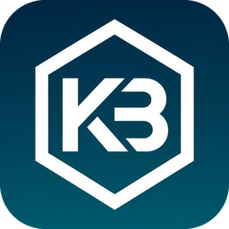
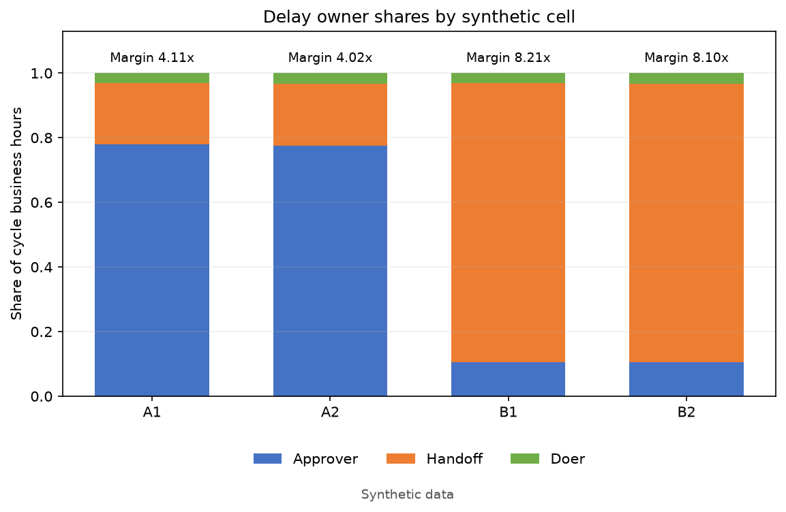
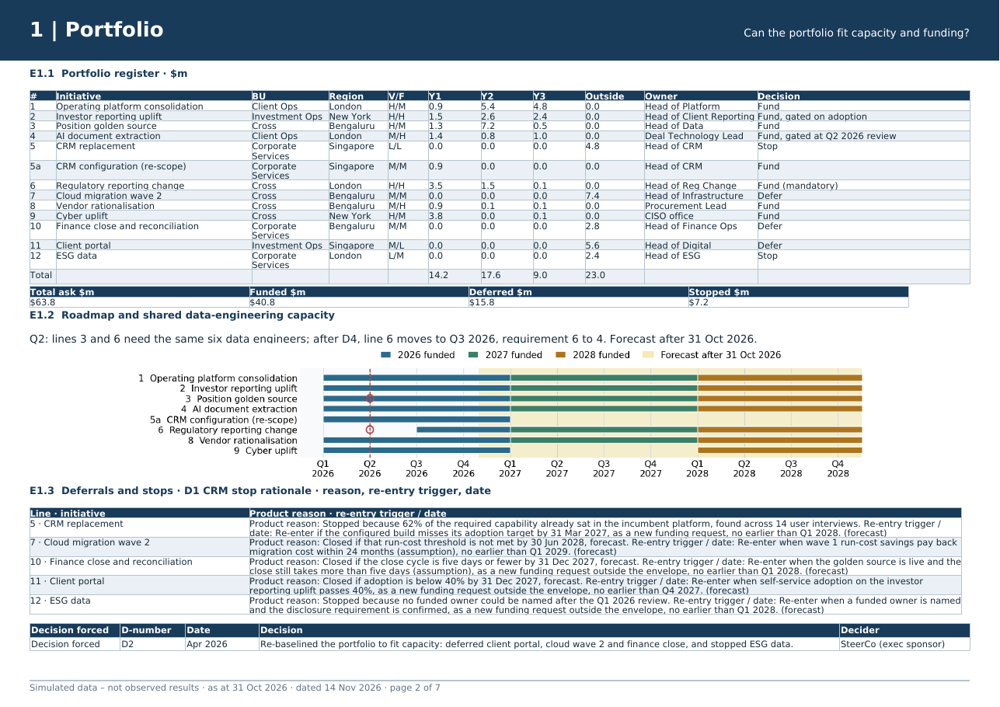

Kakali BandyopadhyayApplied ML and GenAI for investment and markets users: time-based evaluation, failure analysis, controls built in.
Featured case study
Deal intelligence: from screening to an evidence-backed IC memo
One deal-team workflow, built end to end: thesis screening with explicit unknowns and conflicts, diligence Q&A where every claim cites its source, version and conflict tracking, and a six-control memo gate before a human investment-committee decision. Three held-out evaluation runs (4/10, 6/8, 7/10), each miss and its cause published.
Featured build
IT separation evidence pack for a simulated carve-out
Problem A carve-out buyer needs Day 1 continuity, a TSA exit it can control, and a cost case that does not double-count.
What it does Application disposition rules with audited overrides, TSA schedule and month-by-month run-off, exit plan with dependency checks, Day 1 readiness gates, two cost bridges kept on separate bases (annual run-rate and one-time cost to separate), a 100-day plan and an IT due diligence red-flag page.
Evidence 13 reconciliation checks pass; independent Python recomputation matches the workbook to the pound; findings publish the review fixes. Synthetic data.
Featured build
Life and protection AI: which use cases go forward, under what controls
14 AI use cases across a simulated UK life and protection insurer's value chain, gated by an internal risk tier before they are ranked, so high value cannot outweigh an unacceptable risk. The two shortlisted agents, an underwriting evidence summariser and a policy-admin data exception agent, each carry 12 traced controls and a recommend-only accountability table. Interactive: change the weights or the appetite and the ranking updates.
Featured build
PE value-creation and returns model
Synthetic mid-market buyout: scenarios, toggleable value levers, debt schedule, MOIC/IRR, quarterly VCP tracker and independent Python check.
Featured build

Volatility forecasting lab: pre-registered study and data/AI platform
Problem Does VIX-implied variance add anything to a HAR forecast of the next 30 days' S&P 500 variance – and can the answer, and the FOMC text behind it, be served by a platform that proves every number?
What it does A pre-registered walk-forward study (HAR, HAR-X, GARCH, MLP) plus an FOMC document pipeline through Kafka, an AWS serverless lake, Spark, hybrid OpenSearch + Qdrant search and a Redis cache; a LangGraph agent that may only repeat computed numbers; MLflow, drift monitoring, an Airflow DAG and a Kubernetes (kind) deployment.
Evidence Clark–West p = 0.0009 outside Feb–Apr 2020 (not detected on the full sample, p = 0.0597) · fused retrieval recall@5 0.589 vs dense 0.389 on 15 frozen questions; cloud path equal to local (266/266 docs, 6,620 chunks) · agent 0.844 (38/45), no unverified number in any answer, USD 0.064 for 45 runs. Public data; per-date licensed series not published.
Featured build

Margin and financing lab: where should each position sit?
Problem A multi-PM book faces different prime-broker rates, offsets, borrow and limits, so allocation changes both financing cost and margin locked up.
What it does Uses a pre-registered margin proxy and a linear program to allocate positions across synthetic prime brokers, then attributes margin usage and an illustrative charge to PMs.
Evidence 214 positions across 4 prime brokers; 90-day cost USD 21,714,337; 49 positions split across brokers. The results and limitations are published.
Featured build

Access-flow mining: approver or handoff bottleneck?
Problem Slow access provisioning gets blamed on approvers, but the delay can sit in cross-region handoffs and rework instead.
What it does Mines a simulated access-provisioning workflow across three regions; a pre-registered rule classifies delay as approver- or handoff-bound, cross-checked with PM4Py conformance. Includes AI triage behind a human approval gate, a UiPath intake-validation bot and a payback model.
Evidence Pre-registered classifier correct in all 4 test cells; the p95 band miss is reported, not tuned away. 113 tests. The gate fails closed, blocks self-approval and needs two approvers for privileged requests. Synthetic data.

Featured build

Enterprise transformation delivery review
Problem More demand than capacity (205 vs 186 FTE), a vendor above its quality threshold (4.1% vs 1.5%) and a regulatory date with no float, inside a fixed $42.84m envelope.
What it does An 8-tab Excel model drives a 7-page review pack. Every core page ends in a dated decision: stop, re-baseline, re-compete, protect the date, pause AI expansion (D1–D5).
Evidence 37 model checks TRUE; all 1,284 printed figures traced to workbook cells; pages generated from the model, not typed. Synthetic data.
More builds
Personal prototypes on synthetic or public data with illustrative policies. They are not based on, or connected to, any firm's systems, data or processes.
Deal intelligence: from screening to an evidence-backed IC memo
One deal-team workflow, built end to end: thesis screening with explicit unknowns and conflicts, diligence Q&A where every claim cites its source, version and conflict tracking, and a six-control memo gate before a human investment-committee decision. Three held-out evaluation runs (4/10, 6/8, 7/10), each miss and its cause published.
Life and protection AI: which use cases go forward, under what controls
14 AI use cases across a simulated UK life and protection insurer's value chain, gated by an internal risk tier before they are ranked, so high value cannot outweigh an unacceptable risk. The two shortlisted agents, an underwriting evidence summariser and a policy-admin data exception agent, each carry 12 traced controls and a recommend-only accountability table. Interactive: change the weights or the appetite and the ranking updates.
GenAI adoption control tower
For a simulated hedge-fund technology centre: prioritised use cases, risk-tiered stage gates, expand / fix / pause decisions with owners, adoption by cohort, total cost of ownership and follow-up.
Private-credit allocation engine
A solution accelerator prototype for multi-fund deal allocation: eligibility gates, sizing keys, pre-trade regulatory headroom, co-investment escalation, maker-checker approval, reconciliation and an evidence pack per allocation.
IT separation evidence pack
Simulated carve-out, synthetic data. Application disposition with overrides, TSA schedule and run-off, exit plan, Day 1 checklist, two cost bridges (annual run-rate and one-time cost), 100-day PMI plan and an IT due diligence red-flag page. Live Excel formulas, 13 reconciliation checks, independent Python recomputation, 8-slide committee-style deck.
PE value-creation and returns model
Synthetic mid-market buyout: scenarios, toggleable value levers, debt schedule, MOIC/IRR, quarterly VCP tracker and independent Python check.
Governed data products: entity MDM to marketplace
Entity mastering with explainable match decisions and maker-checker approval; critical data elements with owners and hop-by-hop lineage; SQL data-quality rules tested before activation; country scorecards, an audit evidence pack, purpose-based access requests and an AI-readiness flag per data element.
AI-ready data warehouse
One dbt project across PostgreSQL + pgvector, Snowflake and Databricks, with SCD2 snapshots, idempotent incremental loads, model contracts, data-quality tests and a vector-search layer. Identical results across three platforms; CI green. Synthetic data.
Volatility forecasting lab: pre-registered study and data/AI platform
A pre-registered walk-forward study (HAR, HAR-X, GARCH, MLP) plus an FOMC document pipeline through Kafka, an AWS serverless lake, Spark, hybrid OpenSearch + Qdrant search and a Redis cache; a LangGraph agent that may only repeat computed numbers; MLflow, drift monitoring, an Airflow DAG and a Kubernetes (kind) deployment. Clark–West p = 0.0009 outside Feb–Apr 2020; fused recall@5 0.589; agent 0.844 (38/45). Public data.
Enterprise AI architecture for a simulated reinsurer
Reference architecture, a design-authority gate that reviews each use case against eight criteria, architecture decision records, a Responsible AI control matrix with owners, and AI inventory insight on reuse and gaps - backed by two working use cases: submission intake and cited wording Q&A.
tsmom-panel-study
A pre-registered test (OSF) of time-series momentum across 18 cross-asset ETFs, 2011–2026. Effective breadth was measured before the run (B = 4.04), then the result reported against a size-corrected test: Sharpe +0.526, 95% interval [0.038, 1.054].
Margin and financing lab
Allocates a synthetic multi-PM book across prime brokers at minimum financing and margin cost, then attributes margin to PMs – pre-registered, with a validation-style model document.
Enterprise transformation delivery review
Simulated investment-manager portfolio: demand above capacity, a vendor failing quality and a regulatory date with no float, brought to five dated decisions. An 8-tab Excel model drives a 7-page pack; every printed figure traced to its cell.
How I build
- Narrow first release, explicit exclusions and a trade-off record for every scope decision.
- People make the decisions; the system prepares evidence, checks controls and records who decided what.
- Evaluation reported per run and per question, including the misses; held-out scores are never combined or re-scored after fixes.
- Independent review against a definition-of-done list before anything is published.
Recent technical work: pre-registered momentum research · C++ trading-path pre-registration (implementation in progress)